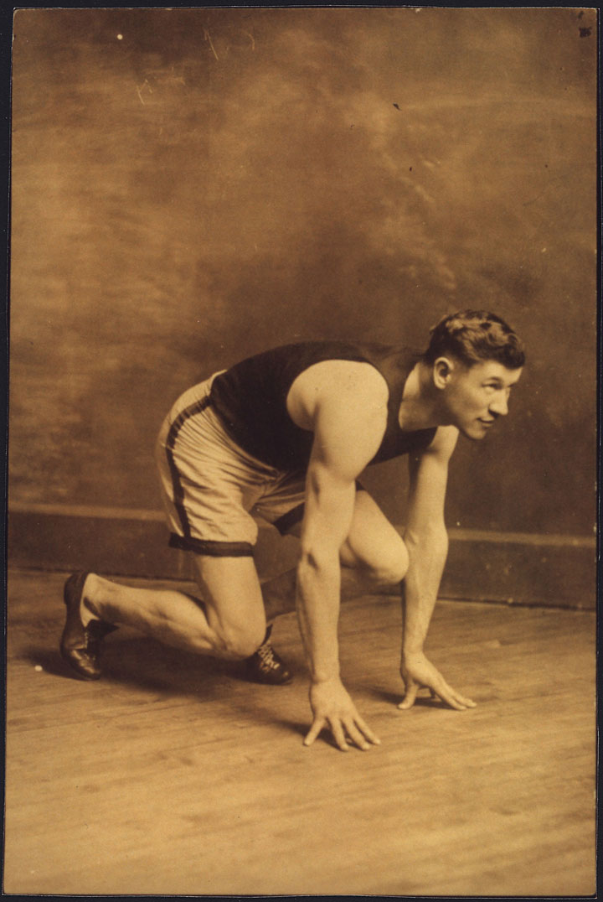

The population of New York City quadrupled between the end of the Civil War and the start of World War I, as 4 million souls crowded into its various boroughs. Chicago exploded from about 100,000 to earn its nickname as the “Second City” with 2 million residents. Philadelphia nearly tripled in this same time period to 1.5 million. Before the start of the Second Industrial Revolution, even these leading cities served the needs of commerce and trade rather than industry. Early factories relied on waterpower, and the location of streams and falls dictated their location. By the 1880s, factories were powered by steam, allowing their construction near population centers. Soon the cityscape was dotted with smokestacks and skyscrapers and lined with elevated railroads.
The skyscraper was made possible by the invention of steel girders that bore the weight of buildings, which could be built beyond the limit of 10 to 12 stories that had typified simple brick buildings. Passenger and freight elevators were equally important. The price of constructing skyscrapers demonstrated the premium value of real estate in the city center. By 1904, Boston and New York completed underground railways that permitted these areas to expand—a marvel of engineering that required few modifications to the rapidly changing city. These early mass transit systems accommodated the proliferation of automobiles in the next two decades by removing trolley lines from the increasingly crowded streets.
These elevated and subterranean railroads (called the “el” or the “subway,” respectively) transported residents between urban spaces that were increasingly divided into separate districts. City planners mapped out districts for manufacturing, warehouses, finance, shopping, and even vice. Those who could afford it could purchase a home in the suburbs—outlying residential districts connected to the city by railways and roadways. Unlike the rest of the city, these neighborhoods were limited to single-family homes and included parks and even utilities such as plumbing and electricity. Suburbanites could also enjoy the pastoral trappings of America’s rural past with lawns and gardens. The daily commute seemed a small price to pay for the reduction of crime and pollution that was endemic within the city center. A suburbanite might even remain connected to the city through the proliferation of the telephone—still a luxury in the 1890s, but one that expanded to several million users within the next decade. However, the majority of urbanites were crowded into tenements that housed hundreds of people that might not include luxuries such as plumbing, ventilation, or more than one method of egress to escape a fire.
One in six Southerners lived in cities by 1900, and most blocks were occupied by either black or white families. The same phenomenon of residential segregation was still emerging in the North. In sharp contrast to the black population of the South, the majority of whom remained on farms and plantations, the vast majority of African Americans in the North lived in towns and cities. Both Northern and Southern cities contained one or more black-owned business districts. Most black communities with more than a few thousand black residents boasted their own newspaper, numerous doctors, a few attorneys, and a variety of stores and restaurants. Segregation encouraged the growth of these business districts where black shoppers were treated with dignity and at least a few black office clerks, professionals, and sales staff could find steady employment. Lingering prejudices and the desire to maintain language and culture sustained similar ethnic neighborhoods and business districts within Northern cities.
Figure 3.1

This 1902 photo shows continuing work being done to construct an underground rail system in New York City.
Swedes and Germans began to constitute the majority of residents in upper-Midwestern cities near the Great Lakes, and nearly every major city had at least a dozen newspapers that were printed in different languages. Although many Americans lumped immigrants together based on their language and nationality, immigrants sought association with those who were from the same region. In many parts of Europe, major cultural differences and old rivalries separated people who were countrymen only due to recent political realignments of Europe. As a result, dozens of fraternal and mutual-aid associations represented different groups of Germans, Italians, Poles, and Hungarians. Jewish residents likewise maintained their own organizations based on their culture and religion. As the migrants moved to smaller cities, Sicilians, Greeks, and northern and southern Italians might set aside old hostilities and see each other as potential allies in a strange land. Ethnic communities, such as San Francisco’s Chinatown and Baltimore’s Little Italy, might appear homogenous to outsiders. In reality these neighborhoods were actually melting pots where various people of Asian and Italian descent lived and worked.
The growth of cities was also the result of migration from the American countryside. In 1890, the US Census eliminated the category of “frontier”—a designator referring to areas with population densities below two people per square mile, excluding Native Americans. By this time, nearly every acre of fertile public land had already been sold or allotted. In response, historian Frederick Jackson Turner drafted a paper advancing an idea that would soon be labeled the Frontier ThesisAn idea proposed by historian Frederick Jackson Turner in 1890, which argued that the frontier shaped US history. Turner saw the frontier as “the meeting point between savagery and civilization.” At this westward-moving border, Turner believed that American society was constantly reinvented in ways that affected the East as well as the West.. Turner argued that the existence of the frontier gave America its distinctive egalitarian spirit while nurturing values of hard work and independence. For Turner, America’s distinctiveness was shaped by Western expansion across a vast frontier. At the frontier line itself, Turner argued, Americans were faced with primitive conditions, “the meeting point between savagery and civilization.” The result was a unique situation where the West was both a crucible where American character was forged and a safety valve for the overpopulation and overcivilization of Europe. Those who subscribed to Turner’s idea questioned how the elimination of the frontier might alter the direction of American history. Others recognized the congruity between Western expansion and urban and industrial life. Modern critics point out that Turner failed to recognize the agency and contributions of Native Americans and argued that his reliance on the mythic frontiersman also neglected the importance of families, communities, government, and commerce within the West.
To the frontier the American intellect owes its striking characteristics. That coarseness and strength combined with acuteness and inquisitiveness…What the Mediterranean Sea was to the Greeks…the ever retreating frontier has been to the United States.…And now, four centuries from the discovery of America, at the end of a hundred years of life under the Constitution, the frontier has gone, and with its going has closed the first period of American history.
—Historian Frederick Jackson Turner
Despite the “closing” of the western frontier in 1890, a new generation of Americans would see new frontiers throughout urban America. During the next three decades, these pioneers sought ways to improve sanitation and healthcare, provide safer conditions for workers and safer products for consumers, build better schools, or purge their governments of corruption. One of the leading urban reform projects was the attempt to eliminate certain criminal behaviors. Every major city and most small towns had their own vice districts where prostitution, gambling, and other illicit activities proliferated. These districts were usually restricted to one of the older and centrally located neighborhoods where upper- or middle-class families no longer resided. For this reason, vice was often tolerated by city authorities so long as it confined itself to these boundaries.
Vice was profitable for urban political machines that relied on bribes and the occasional fines they collected through raids. These limited attempts at enforcement filled city coffers and presented the impression of diligence. Police and the underworld often fashioned an unspoken understanding that vice would be tolerated in certain neighborhoods that were home to racial and ethnic minorities. A Jewish writer recalled playing on streets patrolled by prostitutes who advertised their services “like pushcart peddlers.” Innocence was an early casualty of a youth spent on Manhattan’s Lower East Side. “At five years I knew what it was they sold,” the writer explained. Children in multiethnic neighborhoods from Minneapolis to Mobile experienced similar scenes as the police “protected” brothels and gambling houses in exchange for bribes. In fact, most prostitution dens were located near police stations for this very reason.
Anne “Madame” Chambers of Kansas City provides a model example of the collusion between vice and law enforcement at this time. Chambers used the police to deliver invitations to her various “parties” to area businessmen. The police were also paid to guard the door of her brothel in order to protect the identity of her guests. Most clientele were not residents of the vice districts themselves but middle- and upper-class men who reveled in the illicit pleasures of Kansas City’s tenderloin district. Others engaged in the spectator sport of “slumming,” observing the degraded condition of inner-city life as a means of reveling in their own superior condition. Whether they partook in or merely observed the illicit pleasures of the red-light district, the physical separation of vice from their own quarantined neighborhoods provided both physical and ideological insulation from the iniquities of the city. A businessman could disconnect himself from the actions committed in the various tenderloin districts of his city and then return to his own tranquil neighborhood. Unlike the immigrant or the nonwhite who could not find housing outside of vice districts, the middle-class client retained the facade of respectability because of the space between his home and the vice district that quarantined deviance in poor and minority neighborhoods.
In many cases, a house of this type is a haven of last resort. The girls have been wronged by some man and cast out from home. It is either a place like this or the river for them…After a while they began to have hopes, and no girl who has hopes wants to stop in a place of this type forever, no matter how well it is run and how congenial the surroundings.
—Madame Chambers, reflecting on her life operating houses of prostitution in Kansas City between the 1870s and 1920s
These underworlds were host to both gay and straight. The legal and social fabric of the late nineteenth century equated homosexuality with deviance and therefore quarantined all public displays of homosexuality to the vice districts. Homosexuals at this time lived closeted lives outside of these spaces, although they described their own experience as living behind a mask rather than within a closet. In fact, historians have not found examples of the phrase “closet” in reference to gay life until the mid-twentieth century. Gay men and women of this era sought to create safe spaces where they could take off those masks. They created code words and signals such as “dropping hairpins”—a phrase referring to certain signals that only other homosexuals would recognize. To recognize and to be recognized by others permitted these men and women to “let their hair down”—another coded phrase referring to the ability to be one’s self. Because all homosexual behavior was considered illicit, gay men and women found the vice districts both a refuge and a reminder of the stigma they would face if they ever removed their mask anywhere else.
Although vice neither defined nor typified urban life, the police and political machines concentrated vice in ways that made it more noticeable while furthering America’s suspicion of urban spaces. Reformers hoped to do more than simply quarantine these establishments, pressing for tougher enforcement of existing laws while pushing for tougher prohibition measures against alcohol. The Progressive Era of the early twentieth century saw a unified effort to purge the city and all America of vice. In the meantime, a small group of reformers in the late nineteenth century believed that the best way to combat vice was to improve the condition of the urban poor. Most urban communities were already home to collective efforts to start daycares and educational outreach programs, long before the middle-class reformers took an interest in their plight. In many cases, churches provided partial financing for such institutions, while the women of a particular community volunteered their time watching children or teaching classes in English or various job-related skills. By the 1890s, middle- and upper-class women were increasingly involved in such efforts. Deriving their inspiration from European settlement houses that provided homes and/or social services such as daycare for working mothers, a host of American men and women brought the settlement house movement to America. The most famous of these was Jane AddamsA leader in the emerging field of social welfare, Addams observed settlement houses in London and used this knowledge to found Chicago’s Hull House in 1889. Addams also organized against child labor and was an outspoken opponent of the United State’s entry into World War I, an unpopular position at the time but one that led to her being awarded the Nobel Peace Prize in 1931..
Figure 3.2

Jane Addams was a pioneer of the settlement house movement in America, founding Hull House in Chicago. Addams was awarded the Nobel Peace Prize in 1931.
Addams was born into a wealthy family who viewed the purpose of college for women as a sort of literary finishing school that would prepare one’s daughter for marriage. They were shocked when their daughter returned from college expressing the desire to pursue an advanced degree, fearing that such a path would make it unlikely that their aging daughter would ever find a suitable husband. Undaunted, and refusing to abandon the development of her mind, Jane Addams studied medicine and the burgeoning field of social welfare. She toured the settlement houses of London and resolved to create similar institutions in the United States. In 1889, Addams secured and remodeled a mansion in Chicago called Hull House. Addams lived and worked at Hull House with her intimate friend Ellen Gates Starr and a variety of other women. Together, these women assisted poor mothers and recent immigrants who also resided at Hull House. Some of the social workers, such as Florence Kelley, were committed Socialists. However, most were short-time residents who came from wealthy backgrounds and were studying social work in college. Together, these college women and career reformers taught classes on domestic and vocational skills and operated a health clinic for women and a kindergarten for children. Before long, Hull House had become a community center for the largely Italian neighborhood it served. The Progressive Era of the early 1900s saw the expansion of the number of settlement houses, with approximately 400 similar institutions operating throughout the country.
Other settlement houses in Chicago and throughout the nation were directly affiliated with collegiate social work programs. This was especially true of historically black colleges such as Hampton Normal and Agricultural Institute (known as Hampton University today) in Virginia. Here, alumna Janie Porter Barrett founded the Locust Street Settlement House in 1890, the first of such homes for African Americans. Before this time, local organizations affiliated with the National Association of Colored Women’s Clubs (NACWC)Organized at a meeting held by Josephine St. Pierre Ruffin in Washington, DC, in 1896, the NACWC was formed as a national organization to promote and coordinate the activities of local African American women’s organizations throughout the nation. These activities included personal and community uplift as well as confronting segregation. took the initiative in providing social services within the black community. The NACWC was formed in 1896, but most of the local chapters predated the merger and had been active in creating orphanages, health clinics, schools, daycares, and homes for the elderly African Americans who were generally unwelcome in institutions operated by local and state governments. These women also created homes for black women attending predominantly white colleges throughout the North. For example, the Iowa Federation of Colored Women’s Clubs purchased a home where black students attending the University of Iowa and Iowa State University could live. They even discussed the merits of sponsoring special schools to help black women prepare for college. They soon abandoned this plan for fear it might be misunderstood by whites as an invitation to reestablish the state’s Jim Crow schools, which had been defeated by three state Supreme Court decisions in the 1860s and 1870s.
Figure 3.3
Activist, educator, writer, and leader, Mary Church Terrell was the first president of the National Association of Colored Women’s Clubs. She earned a master’s degree and taught at Ohio’s Wilberforce College, spoke multiple languages, and was a leader in the fight to desegregate the schools and the restaurants of Washington, DC, where she lived and worked for much of her life.
Advances in transportation and communication created national markets for consumer products that had previously been too expensive to ship and impossible to market outside of a relatively small area. Companies such as the Great Atlantic and Pacific Tea Company opened A&P retail outlets, while Philadelphia’s John Wanamaker pioneered the modern department store. Discounters like Woolworth’s offered mass-produced consumer goods at low prices at their “nickel and dime” stores. Department stores like Sears soon began marketing some of their smaller and more expensive items, such as watches and jewelry, through mail-order catalogs. By 1894, the Sears catalog had expanded to include items from various departments and declared itself the “Book of Bargains: A Money Saver for Everyone.” Isolated farmers and residents of towns not yet served by any department store suddenly had the same shopping options as those who lived in the largest cities. The Sears catalog and the advertisements of over a thousand other mail-order houses that emerged within the next decade shaped consumer expectations and fueled demand. By the early twentieth century, an Irish family in Montana might be gathered around the breakfast table eating the same Kellogg’s Corn Flakes as an African American family in Georgia. These and millions of other Americans could also read the same magazines and purchase items they had never known they needed until a mail-order catalog arrived at their doorstep.
Marketers recognized that they could manufacture demand just as their factories churned out products. Trading cards were distributed to children featuring certain products. Newspapers and magazines began making more money from advertising than from subscriptions. Modern marketing became a $100-million-per-year industry by the turn of the century, employing many of the brightest Americans producing nothing more than desire. The distribution of these advertisements extended beyond lines of race, region, and social class. Indeed, aspiration for material goods and the commercial marketplace that fueled this desire may have been the most democratic American institution. For some families, participation in the marketplace also became a reason to take on extra work. For others, the emergence of marketing was just another cruel reminder of their own poverty in a land of plenty.
Figure 3.4

Begun as a small circular offering watches and jewelry for sale by mail, the Sears Catalog quickly expanded to include hundreds of items. The catalog stimulated consumer desire, spurred by the advent of free rural mail delivery in 1896 and the company’s unique “money-back guarantee.” Years after its founding, a company employee predicted the catalog would become a primary source for historians by providing “a mirror of our times, recording…today’s desires, habits, customs, and mode of living.”
In addition to the retail outlets and mail-order houses, national brands emerged and offered products such as Coca-Cola, Crisco, and Quaker Oats. Traveling salesmen sold many products, from vacuum cleaners to life insurance and investments. The rapid growth of a national market for many of these products meant that many opportunities for miscommunication arose. Many companies simply hired more salesmen in hopes of turning their regional businesses into national empires. Rapid expansion meant that executives in distant home offices could do little more than issue guidelines they hoped their salesmen would follow. These individuals often established their own terms and prices that were designed to increase sales and their own profit margins. For example, salesmen of Captain Frederick Pabst’s beer figured out they could increase their own profit by adding water to the kegs of beer they sold. America’s taste for lighter beers was hardly a tragic consequence. For the family who invested all they had in watered-down stock or the widow who purchased a life insurance policy that did not offer the benefits she had been promised, such frauds held dire consequences. As a result, companies that delivered a consistent product and succeeded in protecting their brands from the potential avarice of their own sales staff developed national reputations. Before long, the reputation of such brand names became the most valued asset of a corporation.
Like the corporations and mail-order houses that sprang forth during the late nineteenth century, spectator sports expanded from local contests organized around gambling during the antebellum period to become big business by the turn of the century. Boxing remained controversial in the 1890s, but it was also popular—extremely popular. The emergence of international icons such as the first true world heavyweight champion John L. Sullivan helped the sport to enter the mainstream of American culture. The son of Irish immigrants, Sullivan celebrated his heritage at a time when the Irish were heavily persecuted in America. Sullivan’s reputation for toughness was forged in the days of bare-knuckle brawls that ended only when one man yielded. These grueling fights were banned by the turn of the century, but stories of the Irish heavyweight champion’s grit lasted long after his first major defeat in 1892—an event that corresponded with Sullivan’s first use of boxing gloves. Although boxing moved toward respectability with the addition of gloves and rule-making associations, baseball retained its title as the most popular sport in America.
The Cincinnati Red Stockings became the first salaried team in 1869. By 1890, there were three major leagues, dozens of regional and semipro leagues, corporate sponsors, and crowds in excess of 10,000 spectators. The color line was drawn tightly in baseball, boxing, and other sports from the beginning, but it was never complete. Contrary to myth, Jackie Robinson was not the first African American to play in Major League Baseball. That honor belongs to Moses Fleetwood Walker, a catcher for the Toledo Blue Stockings of the American Association in 1884. At least one light-skinned individual of partial African heritage “passing” for white predated Walker, while dozens of players from Latin America who also had African ancestors played throughout the early twentieth century. One of the more elaborate demonstrations of the malleability of the color line occurred in 1901 when legendary Baltimore manager John McGraw signed Charlie Grant. Grant was a star of several African American teams who played in the barnstorming era of black baseball—the period before the formation of the Negro National League in 1920. An informal ban barred black players shortly after Moses Fleetwood Walker left Toledo because of the racism he endured. As a result, McGraw required Grant to adopt the name “Tokahoma” and pretend to be a Native American. The ruse did not last long, however, as Chicago’s emerging black neighborhoods within the city’s South Side gave such a friendly reception to Tokahoma that Chicago manager Charles Comiskey recognized the deception and refused to play the game if Charlie Grant took the field.
The greatest athlete at this time was likely a Native American who played professional baseball and football in addition to winning the decathlon in the 1912 Olympic Games. Jim Thorpe was born on Oklahoma’s Sac and Fox Reservation and was sent to a number of boarding schools. Like most athletes, he played semiprofessional baseball to help pay for his expenses and escape the military discipline and manual labor of the Indian Industrial School in Carlisle, Pennsylvania. This boarding school was designed to assimilate Native Americans into the dominant Anglo culture. Unfortunately, even though Thorpe needed to earn money to support himself while a student at Carlisle, the Olympic committee decided to enforce the ban against “professional” athletes on Thorpe. The Committee stripped Thorpe of his medals, despite the fact that many other Olympians had also played for money. During the 1980s, a campaign waged by historians and college students convinced the Olympic Organizing Committee to restore Thorpe’s medal posthumously.
Figure 3.5
Jim Thorpe was born on the Sac and Fox reservation in Oklahoma and is widely regarded as the greatest athlete in the history of sport.
Thorpe also led Carlisle to victory over most of the top college football programs in the nation. College football was second only in popularity to professional baseball at this time. College football rivalries were legendary by 1902 when Michigan defeated Stanford in the first Rose Bowl. Attendance at this game demonstrated that that the sport had progressed from the first college football matches of the 1870s that were informal challenges by student clubs who played by an ever-changing set of rules. By the 1890s, college football was the topic of conversation each weekend—among both enthusiasts and those who sought to ban the rough game. Early college football lived somewhere on the border between rugby and boxing, with little or no protective clothing. The introduction of the forward pass helped to spread the players across the field and reduced the number of crushed ribs at the bottom of the scrum. However, the rule change also added to the speed of the game, leading to concussions as players hit one another at full stride. In 1891, James Naismith, a physical education teacher in Springfield, Massachusetts, invented a new team sport that resulted in fewer injuries and could be played indoors during the cold winter months. He hung up two bushel baskets and had his students try to throw a soccer ball into the baskets. He would later coach college basketball at the University of Kansas.
The crowds at popular sporting events developed chants and songs to cheer along their team. The most famous song of all was “Take Me Out to the Ball Game,” by a Tin Pan Alley composer. Colleges developed fight songs by taking popular melodies and adding their own lyrics or by altering popular fight songs such as “Oh Wisconsin” to include their own mascot and school. The University of Michigan’s fight song “The Victors” was also “borrowed” heavily by area rivals. The original lyrics celebrated the team as “Champions of the West”—an indication that the future Big Ten schools were still viewed as “Western” at the turn of the century.
While popular chants were often very similar from college to college, students and community members usually added elements of local flavor. For example, the chalk-rock limestone walls of the buildings that then formed the University of Kansas inspired students to change “Rah, rah, Jayhawk” into “Rock Chalk, Jayhawk.” Games with neighboring Missouri rekindled the historic feud where Southern bushwhackers killed antislavery leaders and burned the Free State Hotel of Lawrence. Missourians emphasized that the original Jayhawkers had also crossed into their state, usually liberating more whiskey and horses than slaves despite the historic memory of Lawrence as a Free State stronghold. Professional football failed to draw such community identity and remained on the margins until the mid-twentieth century. By 1900, college football was an institution, basketball was gaining popularity, and baseball in all its forms was the national pastime.
The New York City neighborhood where the melodies of many of college fight songs and other tunes were written became known as Tin Pan Alley. The name may have derived from the “tinny” sound of the dozens of cheap upright pianos. Or it may be related to the cacophony of sound that resembled the reverberations of tin cans in a hollow alley as the neighborhood’s composers and sheet music publishers experimented with different sounds. From these alleys could be heard a new kind of music known as ragtimeA uniquely American form of music that featured “ragged” rhythms and a strong beat that compelled its listeners to dance or at least tap their feet. Its structure flouted conventional theories about music at the turn of the century. This genre inspired improvisation and gave birth to other forms of music such as jazz., a genre that blended black spirituals with Euro-American folk music. Made famous by urban composers, ragtime was born in the taboo world of red-light districts and interracial dance halls. In these hidden joints, white and black musicians created a uniquely Southern sound. Ragtime would soon spread to the black-owned halls of the North. Oral histories indicate that these melodies sounded just slightly off whenever whites imposed their presence on the early jazz halls of the upper Midwest. For all of its crushing oppression, ragtime was at home in the Deep South where black and white had always lived in intimate closeness to one another. The region’s language, food, and music reflected both the tensions and the bonds that forged generations of creole culture. A distinctly Southern form of expression, ragtime celebrated this fusion without apology and gave birth to the second uniquely American form of cultural expression—jazz music.
The most famous composer and performer of the era was Scott JoplinAn African American composer who was among the great innovators that created ragtime music. Joplin was born in Texas and traveled throughout the South, living and teaching music in Missouri and a host of other states as well as Northern cities such as Chicago., an African American who toured black communities from New Orleans to Chicago years before most of white America discovered ragtime. Thanks to the spread of new technologies, ragtime would be enjoyed in recorded form by many young white Americans, much to the chagrin of their parents. Within a few years, a growing number of white composers and artists added their talents to ragtime and joined traveling black musicians in spreading the new sound throughout the globe. Other white musicians, such as John Phillip Sousa, utilized the tempo of ragtime to create popular band music. Sousa specialized in stirring marches for military bands. The band director of the United States Marine Band, Sousa traveled the nation. Soon his “Stars and Stripes Forever” became one of the most beloved patriotic songs in America.
Figure 3.6
“Maple Leaf Rag” was Scott Joplin’s first successful composition. Joplin’s music was spread by the sale of sheet music and the popularity of this song led to the spread of ragtime as a uniquely American genre of music.
For those who preferred the theater, American audiences were treated to thousands of touring troupes who played several shows per day in every town large enough to draw an audience. The actors of these troupes had to be flexible, performing classical Shakespeare one afternoon and a vaudeville-type variety show a few hours later. The vaudevilleA type of variety show that became one of the most popular forms of entertainment at the turn of the century. A vaudeville show might feature sketch comedy, music, and burlesque dancers. show included songs, dance, slapstick comedy, and usually a chorus line of dancing women whose outfits left less to the imagination as the evening wore on. The more risqué, the better the chance a troupe would play to a full house each night. The exhortations of those who believed the theater to be the tool of the devil usually inspired more souls to attend these cabarets. The most popular form of entertainment at this time was the melodrama—an exaggerated style of morality play that demonstrated the persistence of Victorian standards of thought. The melodrama featured dastardly villains, damsels who constantly fell into distress, and daring men who never stooped to the antihero’s methods to save the day. An even larger-than-life type of live performance was the traveling circus. Most attendees of P. T. Barnum’s circus agreed that he delivered on his promise to provide audiences with the greatest show on earth.
Figure 3.7
Buffalo Bill poses with a group of Native Americans who performed in his touring shows that celebrated the “Winning of the West.”
Traveling circuses and vaudeville shows increasingly sought to present epic stories from US history. No topic was more popular that the fictionalized image of the West. As the last bands of Apaches and Lakota were annihilated or placed onto reservations, a sort of curious nostalgia emerged regarding what most assumed was a “vanishing race” of American Indians. The general public no longer vilified Native Americans once they no longer represented a perceived threat. However, few at this time attempted to understand Native American experience from their own perspectives. Ironically, a man with tremendous respect for native life and culture became the architect of a traveling exhibition that reduced the complexities of Western history into a cabaret. William Frederick “Buffalo BillWilliam “Buffalo Bill” Cody was a cowboy and scout for the military who also became a leading showman. Buffalo Bill’s traveling Wild West shows combined sentimental Western history with vaudeville entertainment that thrilled crowds around the globe.” Cody’s Wild West Show thrilled audiences with displays of horsemanship, sharpshooting, and other rodeo skills by cowboys and cowgirls. But the main attraction and the reason millions in Europe and the United States paid to attend Buffalo Bill’s show were the “Indian attacks” on peaceful settlers that brought out the cavalry. For most Americans, Buffalo Bill’s sanitized and simplified reconstruction of “How the West Was Won” substituted for the real history of the American West. Audiences cheered as the cavalry gallantly rounded up the “rogue” Indians in a display of showmanship where no one really got hurt.